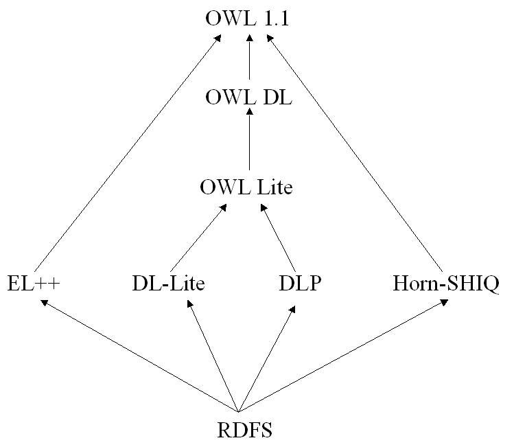

OWL 1.1 extends the W3C OWL Web Ontology Language with a small
but useful set of features that have been requested by users, for which effective reasoning
algorithms are now available, and that OWL tool developers are willing to support. The new features
include extra syntactic sugar, additional property and qualified cardinality
constructors, extended datatype support, simple metamodelling, and extended annotations.
This document provides a specification of different
families of sub-languages of OWL 1.1, for which the main reasoning
problems can be decided in polynomial time.
This document is intended to serve as a useful guideline for
developers and users.
1 Introduction
This document provides a specification of a set of prominent logics
that:
- can be regarded as fragments of OWL 1.1, and
- can handle at least some interesting inference
service in polynomial time with respect to either the number of facts
in the ontology or the size of the ontology as a whole.
The list provided in this document is not
meant to be exhaustive.
The described logics have been recently identified by various groups of
researchers. The interest of
these logics to the OWL community relies on their nice scalability
properties for certain reasoning tasks of special interest for Semantic
Web applications. The goal of this document is to present these logics
as sub-langages of
OWL 1.1 and to describe their computational properties. Their
semantics is provided directly by the semantics of OWL 1.1
[OWL 1.1 Semantics].
In this document, the parts of the language with no effect on the
semantics, such as annotations, will be omitted for simplicity. The
parts of the OWL 1.1 specification concerning datatypes have also been
omitted, since the tractability results depend on the ability to reason
within the datatype theory in polynomial time. In the case of the logic
EL++ it has been shown that, if the datatype theory under consideration
is decidable in polynomial time and is convex (see
[EL++] for details),
then the combined complexity of the relevant reasoning
problems remains polynomial. For the
other logics presented in this document no explicit complexity results
seem to be available.
OWL 1.1 supports a rich set of axioms for stating facts.
All the languages presented in this document place some restrictions in the kind of OWL 1.1 facts that can be
used. The grammar used in this document for facts is as follows:
classAssertion := 'ClassAssertion' '(' individualURI description ')
sourceIndividualURI := individualURI
targetIndividualURI := individualURI
objectPropertyAssertion := 'ObjectPropertyAssertion' '(' objectPropertyExpression sourceIndividualURI targetIndividualURI ')'
The definition of the non-terminal symbols objectPropertyExpression and
description is different in each of the particular languages specified in this document.
The following production integrates all types of facts:
fact := classAssertion | objectPropertyAssertion
2 EL++
The EL++ logic [EL++]
eliminates the allValuesFrom restriction, retaining someValuesFrom,
in order to obtain tractability. There are applications where
allValues restrictions are not needed, and where the expressive power
provided by EL++ seems sufficient. In particular, the medical
ontology SNOMED and the Gene Ontology employ EL++.
Large parts of the GALEN ontology can also be
expressed in EL++. More
details on EL++ can be found in [EL++].
EL++ provides the following main features:
- someValuesFrom restrictions,
- conjunction
- concept disjointness,
- hasValue restrictions
- oneOf enumerations involving a single element,
- complex inclusion axioms for object properties,
- transitive properties, and
- General Concept Inclusion axioms (GCIs).
The following features of OWL 1.1 are known to cause intractability,
when added to EL++:
- allValuesFrom restrictions,
- cardinality restrictions,
- union (and hence DisjointUnion),
- negation,
- inverse properties (and thus symmetric properties), and
- functional and inverse-functional properties.
The language EL++, as presented here, is not a fragment of OWL DL, since it
provides complex inclusion axioms on Object Properties. The fragment of
EL++ that does not provide these axioms is indeed a fragment of OWL DL.
EL++, as presented in this document, is slightly more restrictive than the
language defined in [EL++];
in particular, this document enforces the regularity condition on complex
property inclusion axioms required in OWL 1.1. With this restriction,
EL++ is a fragment of OWL 1.1.
In what follows, a full specification of EL++ is provided.
objectPropertyExpression := objectPropertyURI
objectIntersectionOf := 'ObjectIntersectionOf' '(' description description { description } ')'
objectOneOf := 'ObjectOneOf' '(' individualURI ')'
objectSomeValuesFrom := 'ObjectSomeValuesFrom' '(' objectPropertyExpression description ')'
objectHasValue := 'ObjectHasValue' '(' objectPropertyExpression individualURI ')'
description := objectIntersectionOf | objectOneOf | objectSomeValuesFrom | objectHasValue
2.2 Axioms
2.2.1 Class Axioms
subClass := description
superClass := description
subClassOf := 'SubClassOf' '(' subClass superClass ')'
equivalentClasses := 'EquivalentClasses' '(' description description { description } ')'
disjointClasses := 'DisjointClasses' '(' description description { description } ')'
classAxiom := subClassOf | equivalentClasses | disjointClasses
2.2.2 Property Axioms
subObjectPropertyExpression := objectPropertyExpression | 'SubObjectPropertyChain' '(' objectPropertyExpression objectPropertyExpression`)' { objectPropertyExpression }
subObjectPropertyOf := 'SubObjectPropertyOf' '(' subObjectPropertyExpression objectPropertyExpression ')'
equivalentObjectProperties := 'EquivalentObjectProperties' '(' objectPropertyExpression objectPropertyExpression { objectPropertyExpression } ')'
objectPropertyDomain := 'ObjectPropertyDomain' '(' objectPropertyExpression description ')'
objectPropertyRange := 'ObjectPropertyRange' '(' objectPropertyExpression description ')'
transitiveObjectProperty := 'TransitiveObjectProperty' '(' objectPropertyExpression ')'
objectPropertyAxiom :=
equivalentObjectProperties | subObjectPropertyOf |
objectPropertyDomain | objectPropertyRange |
transitiveObjectProperty
3 DL-Lite
DL-Lite is a fragment of OWL DL
especially tailored for handling efficiently large number of facts
[DL-Lite]. The
main focus is to provide efficient query answering on the data and to
allow the use of Relational Database Managment technologies for such a
purpose.
DL-Lite also includes most of the main features of conceptual models,
like UML class diagrams and ER diagrams. More specifically, DL-Lite
includes the following features of OWL DL:
- a constrained form of someValuesFrom restrictions,
- conjunction,
- concept disjointness,
- domains and ranges of properties,
- inverse properties,
- inclusion axioms for object properties.
The language DL-Lite, as presented here, is indeed a fragment of both OWL 1.1. and
OWL DL. There are different variants of DL-Lite that have been described in the literature. The variant
provided here is called DL-LiteR since it allows for property inclusion axioms. Other variants trade property inclusion
axioms for functionality and inverse-functionality of object properties.
3.1 Classes and Object Properties
inverseObjectProperty := 'InverseObjectProperty' '(' objectPropertyExpression ')'
objectPropertyExpression := objectPropertyURI | inverseObjectProperty
owlClassURIRestricted := Any owlClassURI except for owl:Thing and owl:Nothing
description := owlClassURI
3.2 Axioms
3.2.1. Class Axioms
subClass := owlClassURIRestricted | 'ObjectSomeValuesFrom' '(' objectPropertyExpression owl:Thing ')'
superClass := subClass | `ObjectComplementOf' '(' subClass ')'
subClassOf := 'SubClassOf' '(' subClass superClass ')'
equivalentClasses := 'EquivalentClasses' '(' subClass subClass { subClass } ')'
disjointClasses := 'DisjointClasses' '(' subClass subClass { subClass } ')'
classAxiom := subClassOf | equivalentClasses | disjointClasses
3.2.2. Property Axioms
subObjectPropertyExpression := objectPropertyExpression
subObjectPropertyOf := 'SubObjectPropertyOf' '(' subObjectPropertyExpression objectPropertyExpression ')'
equivalentObjectProperties := 'EquivalentObjectProperties' '(' objectPropertyExpression objectPropertyExpression { objectPropertyExpression } ')'
objectPropertyDomain := 'ObjectPropertyDomain' '(' objectPropertyExpression description ')'
objectPropertyRange := 'ObjectPropertyRange' '(' objectPropertyExpression description ')'
objectPropertyAxiom := objectPropertyDomain | objectPropertyRange | subObjectPropertyOf
Description Logic Programs [DLP] is a
subset of both OWL DL and the Horn fragment of First Order Logic (with
equality). In fact, the standard translation of DLP axioms
to First Order Logic, as presented here, results into Horn clauses. Since DLP can be
considered as a fragment of Horn logic, there is a connection, at least
syntactic, with Logic Programs. However, it should be understood
that; the logical consequences that an OWL
1.1 reasoner would draw from a DLP ontology differs from the ones that
would be obtained using an LP engine. Typically, LP reasoners adopt the
closed world assumption and are, consequently, non-monotonic. OWL 1.1,
however, is monotonic and adopts the open-world assumption. DLP,
as presented in this document, adopts the semantics of OWL 1.1 and not
the semantics of LP.
DLP is able to express the following features of OWL DL:
- concept disjointness,
- domains and ranges of properties,
- inverse and symmetric properties,
- functional and inverse-functional properties,
- subproperty and equivalence relations between object properties,
- transitive properties, and
- a limited form of General Concept Inclusion axioms (GCIs).
4.1 Classes and Object Properties
inverseObjectProperty := 'InverseObjectProperty' '(' objectPropertyExpression ')'
objectPropertyExpression := objectPropertyURI | inverseObjectProperty
description := owlClassURI
owlClassURIRestricted := Any owlClassURI except for owl:Thing and owl:Nothing
4.2 Axioms
4.2.1 Class Axioms
subClass := descriptionLeft | 'ObjectIntersectionOf' '(' descriptionLeft descriptionLeft { descriptionLeft } ')'
descriptionLeft := 'ObjectSomeValuesFrom' '(' objectPropertyURI descriptionLeft ')' | owlClassURI | 'ObjectOneOf' '(' { individualURI} ')'
superClass := 'ObjectAllValuesFrom' '(' objectPropertyURI superClass')' | owlClassURIRestricted | 'owl:Thing'
subClassOf := 'SubClassOf' '(' subClass superClass ')'
equivalentClasses := 'EquivalentClasses' '(' description description { description } ')'
disjointClasses := 'DisjointClasses' '(' owlClassURIRestricted owlClassURIRestricted { owlClassURIRestricted } ')'
classAxiom := subClassOf | disjointClasses
4.2.2 Property Axioms
subObjectPropertyExpression := objectPropertyExpression
subObjectPropertyOf := 'SubObjectPropertyOf' '(' subObjectPropertyExpression objectPropertyExpression ')'
equivalentObjectProperties := 'EquivalentObjectProperties' '(' objectPropertyExpression objectPropertyExpression { objectPropertyExpression } ')'
objectPropertyDomain := 'ObjectPropertyDomain' '(' objectPropertyExpression description ')'
objectPropertyRange := 'ObjectPropertyRange' '(' objectPropertyExpression description ')'
transitiveObjectProperty := 'TransitiveObjectProperty' '(' objectPropertyExpression ')'
functionalObjectProperty := 'FunctionalObjectProperty' '(' objectPropertyExpression ')'
inverseFunctionalObjectProperty := 'InverseFunctionalObjectProperty' '(' objectPropertyExpression ')'
symmetricObjectProperty := 'SymmetricObjectProperty' '(' objectPropertyExpression ')'
objectPropertyAxiom :=
equivalentObjectProperties | subObjectPropertyOf |
objectPropertyDomain | objectPropertyRange |
transitiveObjectProperty | functionalObjectProperty | inverseFunctionalObjectProperty | symmetricObjectProperty
5 Horn-SHIQ
[Horn-SHIQ] is a
fragment of both Horn Logic and the Description Logic SHIQ. It is thus
similar in spirit to DLP, although it is a different fragment of the
intersection between OWL 1.1 and Horn Logic.
The Horn-SHIQ language is not a fragment of OWL DL, since it allows qualified
cardinality restrictions. For simplicity and ease of
presentation, the definition provided here of the language is slightly more restrictive than
the one proposed in [Horn-SHIQ].
Horn-SHIQ provides the following expressivity of OWL 1.1:
- concept disjointness,
- inverse properties,
- symmetric properties,
- subproperty and equivalence relations between object properties, and
- restricted forms of GCIs.
5.1 Classes and Object Properties
inverseObjectProperty := 'InverseObjectProperty' '(' objectPropertyExpression ')'
objectPropertyExpression := objectPropertyURI | inverseObjectProperty
owlClassURIRestricted := Any owlClassURI except for owl:Thing and owl:Nothing
description := owlClassURI
5.2 Axioms
5.2.1 Class Axioms
subClass :=
'ObjectIntersectionOf' '(' subClass subClass { subClass } ')' |
'ObjectSomeValuesFrom' '(' objectPropertyExpression owlClassURIRestricted ')' |
owlClassURIRestricted
superClass :=
'ObjectAllValuesFrom' '(' objectPropertyExpression owlClassURIRestricted ')' |
'ObjectSomeValuesFrom' '(' objectPropertyExpression |
owlClassURIRestricted |
'owl:Nothing' |
'ObjectMinCardinality' '(' cardinality objectPropertyExpression [ owlClassURIRestricted] ')' |
ObjectMaxCardinality' '(' cardinality objectPropertyExpression ')'
subClassOf := 'SubClassOf' '(' subClass superClass ')'
disjointClasses := 'DisjointClasses' '(' owlClassURI owlClassURIRestricted { owlClassURIRestricted } ')'
classAxiom := subClassOf | disjointClasses
5.2.2 Property Axioms
subObjectPropertyExpression := objectPropertyExpression
subObjectPropertyOf := 'SubObjectPropertyOf' '(' subObjectPropertyExpression objectPropertyExpression ')'
equivalentObjectProperties := 'EquivalentObjectProperties' '(' objectPropertyExpression objectPropertyExpression { objectPropertyExpression } ')'
objectPropertyDomain := 'ObjectPropertyDomain' '(' objectPropertyExpression description ')'
objectPropertyRange := 'ObjectPropertyRange' '(' objectPropertyExpression description ')'
functionalObjectProperty := 'FunctionalObjectProperty' '(' objectPropertyExpression ')'
inverseFunctionalObjectProperty := 'InverseFunctionalObjectProperty' '(' objectPropertyExpression ')'
symmetricObjectProperty := 'SymmetricObjectProperty' '(' objectPropertyExpression ')'
objectPropertyAxiom :=
equivalentObjectProperties | subObjectPropertyOf |
objectPropertyDomain | objectPropertyRange |
functionalObjectProperty | inverseFunctionalObjectProperty | symmetricObjectProperty
6 RDF Schema
RDF Schema allows the construction of RDF graphs that are not
permitted in OWL 1.1. This section describes the language given by the
set of all RDF Schema ontologies that are syntactically correct OWL 1.1
ontologies.The language provides the following features:
- domains and ranges of properties,
- object property inclusion axioms, and
- subclass and equivalence relationships between named classes.
The language does not allow complex class descriptions.
6.1 Classes and Object Properties
objectPropertyExpression := objectPropertyURI
owlClassURIRestricted := Any owlClassURI except for owl:Thing and owl:Nothing
description := owlClassURI
6.2 Axioms
6.2.1 Class Axioms
subClass := owlClassURIRestricted
superClass := owlClassURIRestricted
subClassOf := 'SubClassOf' '(' subClass superClass ')'
equivalentClasses := 'EquivalentClasses' '(' description description { description } ')'
classAxiom := subClassOf | equivalentClasses
6.2.2 Property Axioms
subObjectPropertyExpression := objectPropertyExpression
subObjectPropertyOf := 'SubObjectPropertyOf' '(' subObjectPropertyExpression objectPropertyExpression ')'
equivalentObjectProperties := 'EquivalentObjectProperties' '(' objectPropertyExpression objectPropertyExpression { objectPropertyExpression } ')'
objectPropertyDomain := 'ObjectPropertyDomain' '(' objectPropertyExpression description ')'
objectPropertyRange := 'ObjectPropertyRange' '(' objectPropertyExpression description ')'
objectPropertyAxiom :=
equivalentObjectProperties | subObjectPropertyOf |
objectPropertyDomain | objectPropertyRange
7 Computational Properties
This section describes the computational complexity
of the most relevant reasoning problems in the languages introduced so far.
The reasoning problems considered here are the following:
- Ontology Consistency: Check whether a given ontology has at least one model.
- Concept Satisfiability: Given an ontology O and a class A, verify whether
there is a model of O in which the interpretation of A is a non-empty set.
- Concept Subsumption: Given an ontology O and two classes A, B, verify whether the
interpretation of A is a subset of the interpretation of B in every model of O
- Instance Checking: Given an ontology, an individual a
and a class A, verify whether a is an instance of A in every model of the ontology.
- Conjunctive Query Answering: Given an ontology O and a conjunctive query q, return the answers of
the query with respect to O.
Note that in languages that are propositionally closed (i.e. that
provide, either implicitly or explicitly, conjunction, union and
negation of class descriptions), such as OWL DL, OWL Lite and OWL
1.1, the problems of ontology consistency, concept
satisfiability, concept subsumption and instance checking can be
reduced to each other in polynomial time. However, none of the
languages described in this document is propositionally closed
and thus these reasoning problems may have different complexity and
require diferent algorithmic solutions.
When evaluating the complexity, the following parameters will be considered:
- The Data Complexity: the complexity measured with respect to the number of facts in the ontology.
- The Taxonomic complexity: the complexity measured with respect to the size of the axioms in the ontology.
- The Query Complexity: the complexity measured with respect to the number of conjuncts in the conjunctive query.
- The Combined Complexity: the complexity measured with respect to both the size of the axioms and
the number of facts. In the case of conjunctive query answering, the combined complexity also includes the query complexity.
Table 1 summarizes the known complexity results for OWL DL,
OWL Lite, DL-Lite, EL++, DLP, Horn-SHIQ and RDF Schema.
Whenever the complexity for a given problem is described as Open,
with a star, (*), it is meant that its decidability is still an open
question; if the star (*) is
omitted, then the problem is known to be decidable but precise
complexity bounds have not yet been established. If a problem is labeled
as trivial, it is meant
that the language is not expressive enough for allowing to
different possible answers to the problem, e.g. every
RDF Schema ontology is known to be consistent.
Table 1. Complexity of Tractable Fragments
| Language |
Reasoning Problems |
Taxonomic Complexity |
Data Complexity |
Query Complexity |
Combined Complexity |
| OWL DL |
Ontology Consistency, Concept Satisfiability,
Concept Subsumption, Instance Checking |
NEXPTIME-complete |
Open
(NP-Hard) |
Not Applicable |
NEXPTIME-complete |
| Conjunctive Query Answering |
Open* |
Open* |
Open* |
Open* |
| OWL Lite |
Ontology Consistency, Concept Satisfiability |
EXPTIME-complete |
NP-complete |
Not Applicable |
EXPTIME-complete |
| Concept Subsumption |
EXPTIME-complete |
co-NP-complete |
Not Applicable |
EXPTIME-complete |
| Conjunctive Query Answering |
EXPTIME-complete |
co-NP-complete |
in 2EXPTIME |
in 2EXPTIME |
| Instance Checking |
EXPTIME-complete |
co-NP-complete |
Not Applicable |
EXPTIME-complete |
| EL++ |
Ontology Consistency, Concept Satisfiability,
Concept Subsumption, Instance Checking |
PTIME-complete |
PTIME-complete |
Not Applicable |
PTIME-complete |
| Conjunctive Query Answering |
Open |
PTIME-hard |
Open |
Open |
| DL-Lite |
Ontology Consistency, Concept Satisfiability,
Concept Subsumption, Instance Checking, |
In PTIME |
In LOGSPACE |
Not Applicable |
In PTIME |
| Conjunctive Query Answering |
In PTIME |
In LOGSPACE |
NP-complete |
NP-complete |
| DLP |
Ontology Consistency, Concept Satisfiability,
Concept Subsumption, Instance Checking |
In EXPTIME |
PTIME-complete |
Not Applicable |
In EXPTIME |
| Conjunctive Query Answering |
In EXPTIME |
PTIME-complete |
In EXPTIME |
In EXPTIME |
| Horn-SHIQ |
Ontology Consistency, Concept Satisfiability,
Concept Subsumption, Instance Checking |
EXPTIME-complete |
PTIME-complete |
Not Applicable |
EXPTIME-complete |
| Conjunctive Query Answering |
Open |
Open |
Open |
Open |
| RDF Schema |
Ontology Consistency, Concept Satisfiability |
Trivial |
Trivial |
Not Applicable |
Trivial |
| Concept Subsumption, Instance Checking |
In PTIME |
In LOGSPACE |
Not Applicable |
In PTIME |
| Conjunctive Query Answering |
In PTIME |
In LOGSPACE |
Open |
Open |
The fact that data complexity stays LOGSPACE, means that
one can exploit relational database technology for instance checking
and conjunctive query answering.The fact that data complexity goes beyond
LOGSPACE means that query answering and instance checking require more powerful
engines than the ones provided by relational database technologies.
PTIME-hardness essentially requires Datalog technologies. For the CoNP
cases, Disjunctive Datalog technologies could be adopted.
8 Relationships with Other Formalisms
Figure 1 shows the relationship between the
different languages mentioned in this document, including OWL DL, OWL
1.1 and OWL Lite. Two languages L1, L2 are connected by an arrow
L1-->L2 if L1 is polynomially reducible to L2. The reader should
note that in most of the cases the reduction is trivial, since L1 is
just a syntactic fragment of L2 and thus every syntactically valid
ontology written in L1 is also valid in L2. However,if L2 is
OWL Lite, the reduction requires some work, since some of the
constructs available in DL-Lite or DLP are not explicitly provided by
OWL Lite. The reader should note that the absence of an arrow does not
indicate that there is no reduction, not even that there is no easy one.

Figure 1. Relationship between the fragments of OWL 1.1
- [OWL 1.1 Specification]
-
OWL 1.1 Web Ontology Language: Structural Specification and Functional-Style Syntax.
Peter F. Patel-Schneider, Ian Horrocks, and Boris Motik, eds., 2006.
- [Description Logics]
-
The Description Logic Handbook.
Franz Baader, Diego Calvanese, Deborah McGuinness, Daniele Nardi, Peter Patel-Schneider, editors.
Cambridge University Press, 2003; and Description Logics Home Page.
- [OWL 1.1 Semantics]
-
OWL 1.1 Web Ontology Language: Model-Theoretic Semantics.
Bernardo Cuenca Grau and Boris Motik, eds., 2006.
- [OWL Abstract Syntax and Semantics]
-
OWL Web Ontology Language Semantics and Abstract Syntax.
Peter F. Patel-Schneider, Pat Hayes, and Ian Horrocks, eds., W3C Recommendation, 10 February 2004
- [EL++]
-
Pushing the EL Envelope.
Franz Baader, Sebastian Brandt, and Carsten Lutz.
In Proc. of the 19th Joint Int. Conf. on Artificial Intelligence (IJCAI 2005), 2005.
- [Horn-SHIQ]
-
Data Complexity in Very Expressive Description Logics.
Ullrich Hustand, Boris Motik, and Ulrike Sattler.
In Proc. of the 19th Joint Int. Conf. on Artificial Intelligence (IJCAI 2005), 2005.
- [DLP]
-
Description Logic Programs: Combining Logic Programs with Description Logics.
Benjamin Grosof, Raphael Volz, Ian Horrocks and Stefan Decker.
In Proc. of the 12th International World Wide Web Conference (WWW 2003), 2003.
- [DL-Lite]
-
Tailoring OWL for Data Intensive Ontologies.
Diego Calvanese, Giuseppe de Giacomo, Domenico Lembo, Maurizio Lenzerini, Riccardo Rosati.
In Proceedings of the 1st OWL: Experiences and Directions Workshop (OWL-ED 2005), 2005.
- [Complexity]
-
Complexity Results and Practical Algorithms for Logics in Knowledge Representation.
Stephan Tobies.
Ph.D Dissertation, 2002
 OWL 1.1 Web Ontology Language
OWL 1.1 Web Ontology Language